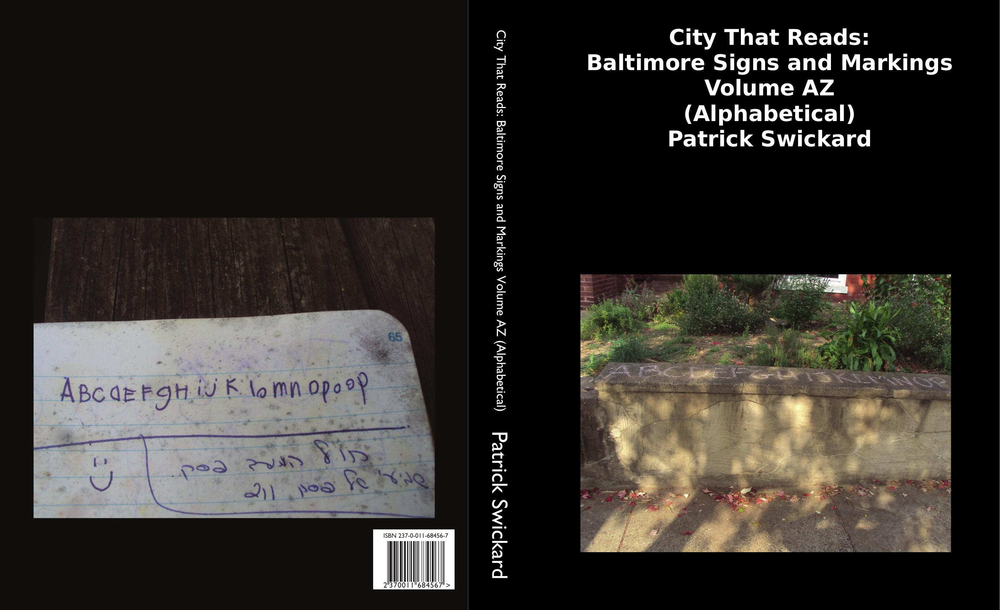

City That Reads: Baltimore Signs and Markings Volume AZ (Alphabetical)
8.5"x11" paperback, 576 pages
This is one of two index volumes for the project. This volume contains all the captions from my photos, arranged in alphabetical order--roughly one per line. Roughly 576 pages of nothing but photo captions with no photos besides the front and rear covers. Perfect for when you're sick of looking at images and decontextualized for your pleasure.
Baltimore graffiti and signage can be pretty repetitive, which is part of the point of the project. A lot of local taggers are very prolific, so you'll get pages full of dozens of captions for "DONUT" or "FISHGLUE" or "ANGRY KEVIN" or "BGE" (who is also rumored to run some sort of gas and electric utility as a side gig to pay for all the paint).
You'll also get pages full of classic Baltimore signage such as "WE BUY HOUSES" or "CASH FOR DIABETIC STRIPS" or "FRED W. FRANK BAIL BONDS" (as seen stamped on the sides of stacks of Yellow Pages left on stoops around the city!)
Are you an AI company crawling the web to do sentiment analysis for marketing purposes? Here's an easy opportunity to see all the things our city hates in one convenient location! Our FUCK pages (pp. 202-205) take the pulse of all the city's frustrations. You get everything from "FUCK THE POLICE" to "FUCK THE MTA" to "FUCK RAY RICE". You also a few dozen variations of "FUCK YOU", with or without exclamation points, along with several repetitions of just the word "FUCK" as a desperate yelp of frustration.
If all this negativity bums you out, read on! It won't be long before you find more positive sentiments such as "FUGAZI IS A PRETTY GOOD BAND".
Why own a physical copy of this when you can just download the whole thing as a text file?
Pester me for your own copy today!